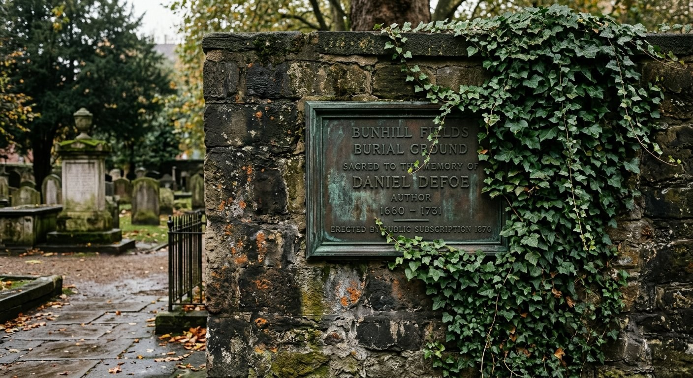
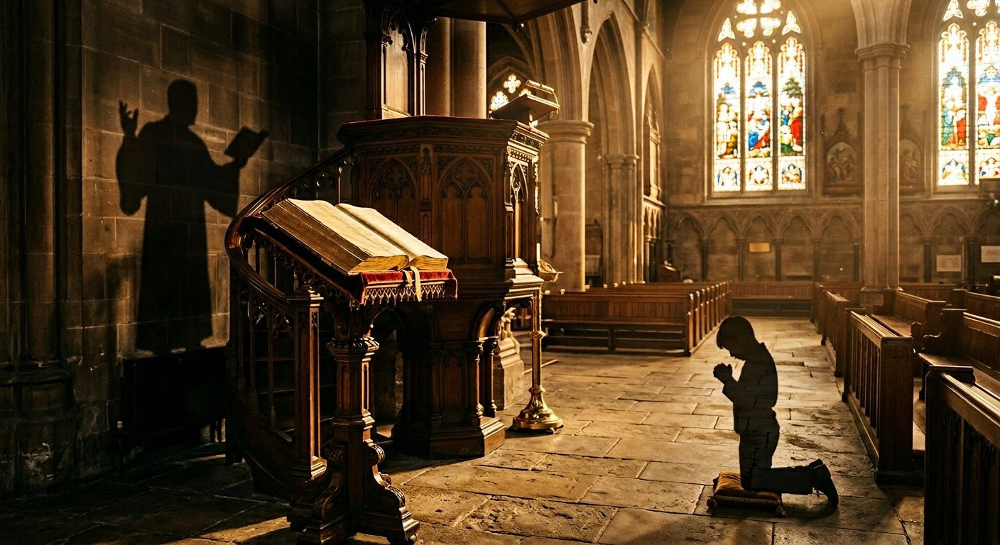

Биография Джона Гилла — не просто история пастора XVIII века. Это рассказ о беспрецедентной интеллектуальной дисциплине, богословской системе и ярлыках, которые история поспешила повесить на него после смерти. Мы разделили исследование на четыре самостоятельных текста.
Человек
От юности в Кеттеринге до формирования характера. Детство, призвание, семья, Декларация 1729.
Учёный
Экзегеза, раввинистика, 9-томный комментарий, учение о Троице, Свод богословия 1769.
Экзегет
Герменевтический метод, семь «универсальных» текстов против Уитби, отвержение и долг веры.
Наследие
Полемика с Уэсли, гиперкальвинизм, Сперджен, влияние на Америку, смерть, реабилитация.
V. Историческое влияние и память
Гиперкальвинизм — спорное наследие
Академическая дискуссия о «гиперкальвинизме»Гиперкальвинизм — не просто «строгий кальвинизм», а спорный ярлык для систем, которые ограничивают или отрицают свободный призыв Евангелия, долг всех людей покаяться и уверовать или благожелательное предложение Христа всем слушателям. В отношении Гилла термин остаётся предметом научного спора. Гилла выглядит следующим образом — таблица позиций ключевых исследователей:
| Исследователь | Позиция | Суть аргумента |
|---|---|---|
| Питер Тун (1967) | Гиперкальвинист | Гилл — «главный архитектор» через Хасси |
| Том Неттлз (1986) | Не гиперкальвинист | Гилл учил о долге всех веровать; отсутствие «предложения» ≠ гиперкальвинизм |
| Тимоти Джордж (1990) | Умеренно критичен | Гилл шёл «тонкой тропой», которую его последователи огрубили |
| Майкл Хайкин (1997–2021) | Защитник | «Пастырь с горящими глазами»; обвинение в гиперкальвинизме преувеличено |
| Ричард Мюллер (2003) | Реформатский ортодокс | Гилл в традиции позднепротестантской ортодоксии, а не в гетто гиперкальвинизма |
| Грегори Уиллис (1997) | Нюансированная | Метод Гилла «многогранен»; проблема — в его последователях |
| Иэн Мюррей (1995) | Критичен | Гилл — причина «духовного паралича»; Сперджен «слишком щедр» |
| Давид Энгельсма (PRCA) | Гиперкальвинист | Отрицание внешнего призыва ко всем невозрождённым |
| Дэвид Рэтел (2008) | Гиперкальвинист | Вечное оправдание логически ведёт к отрицанию долга веровать |
| Рут Макритчи (PhD Glasgow, 2025) | Новейшее исследование | Сопоставительный анализ: Хасси, Скепп, Гилл, Брайн |
Самая свежая академическая работа: Рут Макритчи, «A Theological Study of Hyper-Calvinism in the Writings of Joseph Hussey (1660–1726), John Skepp (1675–1721), John Gill (1697–1771), and John Brine (1703–1765)», PhD thesis, University of Glasgow, 2025 (supervisor: Prof. Scott Spurlock). Это первое системное сравнительное исследование всей четвёрки. Источник: theses.gla.ac.uk/85205.
Гилл использовал экклесиологию Церкви Англии против неё самой. В «Своде богословия» он дважды цитировал «Тридцать девять статей» — и оба раза как аргумент за баптистскую позицию: «Даже Церковь Англии, будучи сама национальной церковью, определяет „видимую церковь как собрание верных людей“». Академик Кристофер Грин называет это «творческим использованием источников» — Гилл атаковал оппонента его же собственным оружием, одновременно демонстрируя готовность к диалогу с широкой христианской традицией (Themelios 49.3, 2024).
Ключевое академическое уточнение — Хайкин о «трёх стадиях» оправдания в системе Гилла: «Гилл объяснял это в терминах трёх стадий оправдания — от вечности, в воскресении Христа и в „суде совести“ верующего. Первые два — виртуальные, а не актуальные». Что означает: большинство кальвинистов строят порядок спасения возрождение → вера → оправдание. Гилл строил иначе: оправдание → возрождение → вера. Это одно различие переворачивает привычное представление о его системе.
Полемика между Гиллом и Авраамом Тейлором стала конкретным поводом к двум трактатам. В 1730 году группа преимущественно индепендентских джентльменов организовала зимне-весеннюю лекционную серию в Лондоне с участием девяти проповедников: Роберта Брэгга, Томаса Брэдбери, Джона Херриона, Томаса Холла, Питера Гудвина, Джона Слейдена, Авраама Тейлора, Самуэля Уилсона — и Гилла. Поводом для включения Гилла в число лекторов стала случайная фраза, брошенная «неким джентльменом» в разговоре: «ни один кальвинист не может писать в этой полемике с каким-либо преимуществом». Друзья Гилла, присутствовавшие при разговоре, немедленно предложили ему возразить на практике — и Гилл получил тему воскресения мёртвых. Он произнёс две проповеди, впоследствии изданные как самостоятельный трактат: «Его труд получил одобрение некоторых людей учёных и здравомыслящих — и даже самого того лица, чьё суждение стало поводом к его написанию». На той же серии оба — Гилл и Тейлор — участвовали, и Гилл намеревался указать Тейлору на «вредные для истины» пассажи. Когда при чтении в узком кругу они не прозвучали — Гилл решил, что Тейлор исправил их. Но книга вышла со спорными местами и с добавленной остротой. Тогда Гилл опубликовал «Письмо о вечной любви Бога» — и Тейлор ответил, процитировав одно высказывание Гилла «в самом дурном свете» и осыпав его «самой бранной бранью». Гилл был вынужден написать трактат «О необходимости добрых дел ко спасению» (1739). В конце трактата он написал несколько слов в самозащиту, о которых, по свидетельству биографа, «впоследствии сожалел».
После смерти Гилла разгорелась полемика. Последователи — а особенно ученики в духе Роберта Сандемана — развили его учение до крайностей, которые сам Гилл, возможно, не одобрил бы. Их назвали гиперкальвинистами — теми, кто пошёл дальше Кальвина.
Обвинения включали: учение о вечном оправдании (избранные оправданы от вечности до веры); ограничение евангельского призыва (евангелие не следует предлагать всем, только избранным); антиномианство (моральный закон не обязателен для оправданных). В церквях, следовавших Гиллу, наступала миссионерская спячка: если Бог всё предопределил, зачем трудиться для обращений?
Современная наука, особенно Майкл Хайкин, во многом реабилитирует Гилла. Да, он учил вечному основанию оправдания в Божьем замысле. Но он различал вечный акт Бога и временное переживание верующего. Да, он подчёркивал суверенную благодать. Но он настаивал, что евангелие проповедуется всем, люди ответственны за слышание, проповедник должен искренне приглашать.
Гилл против антиномизма: два трактата, о которых забыли
Удивительная ирония: именно Гилла чаще всего обвиняли в антиномизме — и именно Гилл написал два специальных трактата, опровергающих это обвинение. В 1739 году он опубликовал «Необходимость добрых дел для спасения рассмотрена» (The Necessity of Good Works unto Salvation Considered), а в 1751 году — «Учение о благодати, освобождённое от обвинения в распутстве» (The Doctrine of Grace clear'd from the Charge of Licentiousness).
Первый трактат был прямым ответом Аврааму Тейлору, который в памфлете атаковал Гилла, обвинив его в «грязной мечте, опасной ереси, бесстыдном богохульстве». Гилл ответил: добрые дела необходимы — не как основание спасения, а как «свидетельство» для врагов Евангелия и для самих верующих. Показательна глубина его исторической учёности: проводя аргументацию, он обратился к Меланхтону и «Майористическому спору» XVI века — спору о том, нужны ли добрые дела для спасения. Это прямое доказательство, что Гилл был знаком с историей богословских полемик на сто пятьдесят лет вглубь. Огастус Топлэди засвидетельствовал: Гилл был единственным, кто перед лицом постоянного арминианского обвинения в антиномизме успешно доказал, что «Учение Благодати не ведёт к Распущенности».
Иов Бёрт (1736): анонимная атака на супралапсарианство
В 1736 году Гилл подвергся атаке с другой стороны: некий Иов Бёрт (Job Burt) выпустил анонимный памфлет «Некоторые доктрины супралапсарианскойСупралапсарианство — порядок богословских декретов, в котором избрание и отвержение рассматриваются логически до Божьего постановления допустить грехопадение. Сублапсарианство помещает избрание после постановления о грехопадении. Гилл не любил превращать этот порядок в центр проповеди. схемы рассмотрены» (Some Doctrines in the Supralapsarian Scheme Examined). Гилл разоблачил аргументы и при этом отверг саму втянутость в этот супра-/сублапсарианский спор — он считал его слишком спекулятивным. Примечательно, что Гилл знал имя Бёрта, но называл его «учёным» — пример полемической сдержанности.
Критики: Холл, Веддер и точный счёт
Среди критиков Гилла особо выделяется баптистский историк Генри К. Веддер (Henry C. Vedder), написавший значительную Baptist History. Он назвал богословие Гилла «с трудом отличимым от фатализма и антиномизма», а комментарии — «более учёными, чем вразумительными» (more learned than perspicuous). Это третий голос критики — рядом с Робертом Холлом («континент грязи») и Уильямом Уистоном. Майкл Хайкин справедливо замечает, что суждение Холла «говорит нам больше о Холле, чем о Гилле».
Фуллер и «современный вопрос»: исторически точная картина
Обвинение в гиперкальвинизме применительно к самому Гиллу требует осторожности и точного определения термина. Сам Эндрю Фуллер полагал, что Гилл не участвовал в споре о «долге веры». Джон Райленд-младший, ссылаясь на «Дело Бога и истины», свидетельствовал, что Гилл никогда не писал по вопросу, впоследствии названному «современным вопросом». Гилл умер в 1771 году — за четырнадцать лет до публикации «Евангелия, достойного всякого принятия» Фуллера (1785). Сам Фуллер признавал, что Гилл «установил принцип» человеческой ответственности, когда писал в «Деле Бога и истины» (раздел XXX, п. 3): «превратность их воли заслуживала порицания, поскольку происходила из испорченности и порочности их природы».
Вечное оправдание: esse и bene esse — богословская точность
Центр споров — доктрина вечного оправдания. Гилл формулировал её с философской точностью, которую часто упускают его критики. Он разграничивал esse (бытие) и bene esse (благобытие) оправдания:
Академическая реабилитация этого учения пришла в 2024 году: в International Journal of Systematic Theology (vol. 26: 176–196) вышла статья Г. М. Уолдена «Revisiting John Gill's Doctrine of Eternal Justification». Автор показывает, что прежняя наука неверно понимала Гилла: он разграничивал оправдание как имманентный акт в Боге и как переходный акт в верующем — различие, делающее его учение совместимым с реформатской ортодоксией (Онлайн-библиотека Wiley, 2024).
Редкие свидетельства: провидение и живые эпизоды
Гимн, написанный в день крещения
Один из самых трогательных фактов в биографии Гилла: в день своего крещения — 1 ноября 1716 года — он сочинил гимн, который тут же был исполнен во время таинства. Риппон сохранил его начальные строки в оригинале:
This ordinance he gave?
And did his sacred body lie
Within the liquid grave?
Did Jesus condescend so low
To leave us an example?
And sha'n't we by this pattern go;
This heavenly rule so ample?
Дарованное Им установление?
И праведное тело погрузить
В могилу водную для погребения?
Ужели снизошёл Иисус так низко,
Оставив нам пример для подражания?
Неужто не пойдём дорогой близкой
По небесам начертанным предписаниям?
В воскресный вечер после крещения — 4 ноября 1716 года — Гилл был принят в члены церкви и впервые причастился. В тот же вечер, на молитвенном собрании в частном доме, он прочитал 53-ю главу Исаии. По окончании несколько братьев обратились к нему: «Друг, мы воспринимаем это как начало упражнения в пасторском даре, которым, мы убеждены, Господь одарил вас». Первая же настоящая проповедь, произнесённая вскоре, была из 1 Кор. 2:2 — текст, которому он оставался верен всю жизнь.
Молодёжное общество молитвы
При молитвенном доме Хорслидауна существовало «общество молодых людей», проводившее «молитвенные упражнения» каждое воскресное утро. Именно по их просьбе 25 декабря 1732 года Гилл проповедовал им о молитве, а год спустя — о пении псалмов из 1 Кор. 14:15. Обе проповеди были впоследствии напечатаны по настоянию самого этого общества — редкий пример того, как молодёжная инициатива оказалась сохранена в истории через печатное слово.
Ураган 1752 года: кабинет, ставший западнёй
15 марта 1752 года над Лондоном пронёсся страшный ураган, нанёсший большой ущерб многим домам. Вскоре после того, как Гилл покинул свой кабинет, чтобы идти проповедовать, рухнула дымовая труба — она пробила крышу прямо в его рабочую комнату, разнесла в щепы письменный стол и непременно убила бы его, случись это чуть раньше.
Среди лондонцев бытовала поговорка: «это так же верно, как то, что доктор Гилл в своём кабинете». Размышляя о чудесном спасении, Гилл вспомнил слова астронома доктора Галлея, хвалившего кабинетный труд за то, что он «уберегает от опасности», и остроумно ответил: «Что же теперь со словами доктора Галлея, ведь человек может подвергнуться опасности прямо в своём кабинете, не хуже чем на большой дороге, — если не охраняется особым промыслом Божьим?»
Письма францисканского монаха из Севильи
В 1754 и 1756 годах Гилл получил два письма от францисканского монаха из Севильи, подписавшегося именем «Джеймс Генри». Монах просил прислать ему «Диссертацию о крещении» и объявил себя «поклонником всех учёных людей, какого бы они исповедания ни были». Гилл отослал трактат; монах ответил, что прочитал его «с великим удовольствием» и намерен написать дружелюбные замечания, «веря, что доктор Гилл уступит апостольскому преданию, если оно будет ясно доказано».
Дальнейшая переписка оборвалась неожиданно: лиссабонское землетрясение 1755 года вынудило монаха бежать вглубь страны, и более Гилл о нём ничего не слышал. Этот короткий эпизод — свидетельство того, как репутация учёного баптистского пастора пересекала конфессиональные и национальные границы Европы.
Мистер Кармайкл из Эдинбурга
Некий г-н Кармайкл — пресвитерианский пастор из Эдинбурга — придя к убеждению в истинности крещения верующих погружением, специально приехал в Лондон, чтобы принять крещение от Гилла. Это вызвало газетную бурю: автор в публичной газете осмеял проповедь, произнесённую Гиллом по этому случаю из 1 Ин. 5:3. Гилл был вынужден опубликовать проповедь с примечаниями. Редактор газеты в итоге сам закрыл полемику, отказавшись печатать дальнейшие письма с обеих сторон.
Самуэль Дэвис: дневниковая запись о встрече 30 января 1754 года
В 1753 году пресвитерианский пастор из Вирджинии Самуэль Дэвис (1723–1761) — впоследствии четвёртый президент Принстонского университета — прибыл в Великобританию для сбора средств в пользу College of New Jersey. В своём дневнике он подробно описал утреннее посещение Гилла 30 января 1754 года. Дэвис застал «серьёзного, сдержанного маленького человека», который выглядел «молодым и бодрым» — хотя сам угадал его возраст «около 60». Гилл выразил готовность поддержать Колледж, но честно предупредил: его «имя будет мало чем полезно» и не следует многого ожидать от английских кальвинистских баптистов — «в целом они, к сожалению, не понимают важности учёности».
Это замечание — «к сожалению, не понимают важности учёности» — перекликается с другим документом: в 1752 году, когда партикулярные баптисты предприняли первую попытку создать образовательное общество для пасторов, Гилл был цитирован в том же духе (Anthony Clarke, Baptist Quarterly 50/3, 2019). Горькая ирония: величайший учёный своей деноминации оплакивал академическую слабость её пасторства.
Соломон Лоу и «Энциклопедия Чемберса» (1747)
В сентябре 1747 года знаменитый грамматик Соломон Лоу из Хаммерсмита написал Гиллу письмо: он собирал материал для «Дополнения к Энциклопедии Чемберса» (сам Чемберс перед смертью предложил ему эту работу). Обнаружив проповедь Гилла о пении псалмов, Лоу написал нечто редкое: «Я убедился, что с вами не обойтись, как с большинством писателей. Упомянутый труд — сплошная квинтэссенция: так что вместо того, чтобы делать выписки, я был вынужден переписать большую его часть, чтобы воздать должное статье о псалмодии». Лоу вскоре умер, и его выписки из Гилла, по всей видимости, в опубликованное Дополнение не вошли.
Ричард Холл: двести экземпляров воспоминаний — ни одного не сохранилось
Один из прихожан Гилла — Ричард Холл (1728–1801), чулочник из Саутварка — записывал все услышанные проповеди на протяжении двадцати пяти лет и переплетал тетради для личного назидания. В год после смерти Гилла Холл напечатал за собственный счёт — £1. 14. 6 — двести экземпляров книжки под заглавием «Что я помню о докторе Гилле» и раздал их друзьям и знакомым. Ни одного сохранившегося экземпляра до сих пор не обнаружено — это одна из самых горьких лакун в источниковедении Гилла.
Мэри Бэйли: женщина написала элегию на смерть Гилла (1771)
В том же 1771 году некая Мэри Бэйли (Mary Bayly) опубликовала отдельную книжную элегию: «Элегия на весьма оплакиваемую смерть... верного служителя Евангелия, Джона Гилла, доктора богословия» (An elegy on the much lamented death of...John Gill D.D.). Это исключительно редкий случай: женщина-автор пишет богословскую элегию баптистскому пастору в эпоху, когда женщины почти не публиковались в этом жанре (Women's Print History Project, womensprinthistoryproject.com).
Элизабет Негус: «главное провидение» и портрет, найденный в бумагах
В 1718 году, во время стажировки в Хайем-Феррерс, Гилл познакомился с молодой благочестивой женщиной по имени Элизабет Негус — членом новой церкви — и женился на ней. Сам доктор всегда был убеждён, что этот брак — главное, ради чего Бог послал его в то место. Риппон сохранил его собственные слова: «одно из главных благословений своей жизни». Биограф добавил: «Она оказалась любящей, рассудительной и внимательной; и своей неусыпной мудростью взяла с его рук все домашние заботы, так что он мог с большей свободой и покоем духа заниматься науками и посвящать себя пасторскому служению». В браке они прожили 46 лет, три месяца и девятнадцать дней. Элизабет умерла 10 октября 1764 года, в возрасте 67 лет.
После её смерти Гилл не смог говорить о жене с кафедры («скорбящий муж не смог ничего сказать с кафедры о своей покойной супруге»), но написал подробную характеристику жены — «потом найденную среди его бумаг» (Риппон). Этот текст — редчайший интимный портрет: богослов-полемист написал его для себя, не для публики. 21 октября 1764 года, «в первый раз после кончины возлюбленной жены», Гилл проповедовал из Евр. 11:16: «они стремились к лучшему, то есть к небесному». В конце добавил: «Сказанное может служить тому, чтобы отлучить нас от мира… ибо это — не наш покой, не наш дом, не наше родное место».
Управление церковью: единственный пастор, никаких степеней
«Свод практического богословия» Гилла — не только богословский трактат, но и подробное руководство по устройству церкви. Его экклесиологические позиции отличались такой же последовательностью, как и его догматика.
Гилл прямо и категорично заявил: «Ординарные служители церкви — это пасторы и дьяконы, и только они. Антихрист ввёл в употребление целый сброд других должностей, о которых Писание ничего не знает». Из этого принципа он вёл свою церковь пятьдесят один год — без второго пастора, без правящих пресвитеров и без каких-либо иерархических степеней.
Понятия «пастор», «учитель», «епископ» и «пресвитер» для Гилла означали одно и то же служение: разбирая Еф. 4:11 и Деян. 20:17,28, он доказывал, что Павел называл одних и тех же людей всеми этими именами. «Правящий пресвитер» как отдельная должность — пресвитерианское изобретение, которого Гилл не признавал.
О механизме выборов: Гилл разбирал слово χειροτονέω (Деян. 14:23) — «поставить пресвитеров» — и показывал, что оно означает именно избирать голосованием — поднятием руки, а не сакральное рукоположение. Суть рукоположения, по его учению: «добровольный выбор и призыв народа и добровольное принятие этого призыва избранным». При рукоположении самого Гилла в 1720 году были одновременно рукоположены три дьякона; среди первых дьяконов, отвечавших на официальные вопросы, был Томас Кросби.
О вступлении в членство: человек должен сам предложить свою кандидатуру, дать устный личный рассказ о том, что Бог совершил с его душой («лучше устно, чем письменно, ибо так полнее открывается аффект сердца»), исповедать веру и быть принятым голосованием церкви. Образец — Деян. 9:26–27: Савл принят не до, но после свидетельства Варнавы. О численности церкви для судебного разбора Гилл обращался к раввинистике — не менее десяти человек, как в Мишне (трактат Санхедрин): именно столько составляло минимальное «собрание» у евреев.
Об отлучении Гилл написал нечто важное: оно совершается не пастором и не группой старейшин, но самой церковью. При этом «предание Сатане» — апостольское чудесное действие, прекратившееся с апостольским веком — он категорически разграничивал с обычным церковным отлучением. Восстановление после отлучения возможно: 2 Кор. 2:6 он интерпретировал именно как документацию такого случая с кровосмесником из 1 Кор. 5.
О ступенях дисциплины Гилл давал точные практические указания: сначала наедине, затем с двумя-тремя свидетелями, затем перед всей церковью — и только после трёх ступеней уместно отлучение. Однако при «вопиющем и публичном грехе» или «явной ереси, разрушающей основные доктрины» — немедленно, без предупреждений: «Нельзя тратить время на предостережения». Прямой пример — кровосмесник у коринфян в 1 Кор. 5: Павел не давал предупреждений.
О принятии в членство Гилл особо оговаривал пастырское снисхождение: «День малых дел не должен быть презираем; надломленного тростника не должно ломать, курящегося льна не должно гасить; нежных агнцев Христос принимает на руки и несёт на груди Своей; немощного в вере принимайте». Это не абстрактная формула — пастырская инструкция для реальных людей.
О природе церкви, молитве и пении
О природе церкви Гилл писал прямо: «Не место, а собрание избранных я называю церковью» — и цитировал Климента Александрийского (II в.). Здание молитвенного дома он считал «домом» лишь в переносном смысле, резко критикуя тех диссентеров, кто называл поход в собрание «походом в церковь».
О публичной молитве Гилл писал из первоисточника — Юстина Мученика, которого он цитировал: «После чтения Писания и проповеди мы все вместе поднимаемся и возносим молитвы; и после совершения Вечери предстоятель церкви — пастор — по своей способности изливает молитвы и благодарения, и весь народ громко восклицает „Аминь“». Стоячая молитва была у него нормой: он ссылался на Никейский собор, который предписывал совершать молитвы стоя, а не на коленях, по воскресеньям. О сути молитвы Гилл писал: «Молитва — это дыхание возрождённой души; как только дитя рождается на свет, оно кричит; как только душа рождается свыше, она молится».
О пении Гилл посвятил отдельную главу «О пении псалмов как части публичного богослужения». Его позиция была умеренной: петь можно псалмы, гимны и духовные песни — это прямое новозаветное установление. При этом он возражал как тем, кто пел исключительно псалмы, так и тем, кто вводил только новые гимны. Он апеллировал к тому, что сам Христос с учениками пел гимн после Вечери: «Благодарение — это Его личный акт; пение — совместный». Вопросы о том, кто именно поёт, в каком составе, с музыкальным сопровождением или без, — он оставлял в сфере «христианской свободы».
Сперджен — наследник и независимый критик
Богословская нить от Гилла к Сперджену — не просто метафора. Это конкретная история одной общины, которую можно отследить поимённо: Бенджамин Кич → Бенджамин Стинтон → Джон Гилл → Джон Риппон → Чарльз Хэддон Сперджен. Гилл, Риппон и Кич «в совокупности служили 150 лет» — так говорил сам Сперджен. В 2026 году в списке пасторов той же церкви — двадцать одно имя, начиная с ок. 1653 года.
16 августа 1859 года, при закладке первого камня нового здания Метрополитен-Табернакля, Сперджен произнёс историческую речь, дав самую развёрнутую публичную характеристику Гилла: «человек глубокой учёности и глубокого благочестия», чей «Свод богословия давно пользуется высочайшей репутацией» и «как пылкое изложение полной и стройной системы убеждений — не имеет себе равных», «сиял, словно звезда первой величины среди окружающего мрака» (Sermons, vol. 5, sermon XLV, CCEL).
При этом Сперджен произнёс парадоксальную фразу, которую редко цитируют: «Я — преемник великого и досточтимого доктора Гилла, богословие которого почти повсеместно принято среди более строгих кальвинистских церквей; но хотя я чту его память и верю его учению — он не мой Равви» (he is not my Rabbi). В проповеди «Усыновление» Сперджен рассказал, что учение Гилла об усыновлении «в своё время вызвало значительный шум» (considerable outcry), и при этом лично разделял взгляд Гилла «в значительной мере», предложив формулу: «в замысле Бога — от вечности, в личном переживании верующего — во времени».
Провиденциальная нить: Риппон, преемник Гилла, молился с кафедры «о ком-то, кого он не знал», кто «в будущем значительно умножит стадо». Старейшины церкви говорили Сперджену, что прочли ответ на эти молитвы Риппона в его служении — замкнув богословскую цепочку через провиденциальную молитву.
Гилл и ислам: неожиданное измерение
Среди исследователей Гилла выделяется специальная работа в Southern Baptist Journal of Theology (SBJT, 25.1, 2021) — статья Джозефа Харрода «John Gill and Islam». Она показывает: в своих комментариях Гилл систематически взаимодействовал с исламской мыслью — разбирал исламские аргументы, привлекал арабские источники, опровергал исламскую критику тринитарного учения. Это выделяет его среди баптистских богословов XVIII века: большинство просто игнорировали ислам как серьёзную богословскую систему, тогда как Гилл счёл необходимым с ним полемизировать.
Богословские источники Гилла: кто стоит за «Сводом богословия»
Ричард Мюллер провёл детальный анализ источников «Свода богословия» Гилла. Богословская библиотека Гилла составляла главных английских и континентальных реформатских мыслителей XVII века, работавших в рамках схоластической ортодоксии: Данай, Эймс, Воллебий, Валей, Риветус, Оуэн, Виттих, Synopsis purioris theologiae, Гомар, Аррусмит, Альтинг, Маккович, Пококк, Мед, Хурбек, Эссений, Бакстер, Алликсий, Маркций, Хоттингер, Коккейус, Венделин, Форбс, Гудвин, Твисс, Пембл, Ратерфорд, Турретин, Витсиус, Морней, Уотерленд и Витринга. Мюллер также отметил, что Гилл в делении «Свода» на «учительную» и «практическую» части следовал рамистскому методу Альтусия, Эймса и Воллебия.
Современная академическая реабилитация Гилла ведётся активно. В 2025 году вышло первое сокращённое издание «Свода богословия» (A Body of Doctrinal and Practical Divinity, Abridged, H&E Publishing, октябрь 2025) — совместный «Проект Джона Гилла» Лондонского Лицея, Центра Эндрю Фуллера (SBTS) и издательства H&E. Майкл Хайкин публично призвал к подготовке научно-критического издания полных трудов Гилла, констатировав, что он остаётся единственным великим баптистским богословом XVIII века без такого издания (труды Фуллера выходят в 17 томах у Walter de Gruyter).
В последние годы зрение Гилла, которому он обязан был столькому чтению, оставалось удивительно крепким. Риппон сообщает: он исправлял последние работы без очков, читал мельчайший шрифт при свечах почти до конца. Голос ослаб, но люди понимали его интонации.
Свидетельством его неиссякаемого труда стала строка, которую Гилл сам написал в 1770 году — за год до смерти — на полях очередного корректурного листа: «Последняя из более чем десяти тысяч!» Вся эта гора — девять томов библейского комментария, два тома «Свода догматического богословия», два тома «Практического богословия», трактаты, проповеди, диссертации — была написана его собственной рукой и им же лично прочитана в корректуре.
9 октября 1757 года, открывая новую часовню на Картер-Лейн, Гилл проповедовал из Исх. 20:24: «На всяком месте, где Я положу память имени Моего, Я приду к тебе и благословлю тебя». В этой проповеди он произнёс слова, ставшие символом всей его жизни:
Знаменательная деталь: первая проповедь Гилла — произнесённая вскоре после крещения, в ноябре 1716 года — была именно из 1 Кор. 2:2. Через сорок один год, открывая новый молитвенный дом, он вернулся к тому же тексту. Он никогда не уходил от него.
В финальных проповедях Гилл обращался к песне Марии (Лк 1:46–55) и песне Симеона (Лк 2:29–32). Последний текст, с которого он проповедовал: Луки 1:77–78 — «ради прощения грехов их, по благоутробному милосердию Бога нашего, которым посетил нас Восток свыше». Он хотел закончить Nunc dimittis — «ныне отпускаешь раба Твоего» — но болезнь усилилась.
Родственнику, пастору Джону Гиллу из Сент-Олбанса, он дал финальное свидетельство — в полном тексте, сохранённом Риппоном:
Незадолго до смерти он сказал посетившему его другу: «Нет ничего, что меня беспокоило бы», — и прочитал строки из Исаака Уоттса: «Он поднял меня из глубин греха, / Врат разверстого ада: / И утвердил моё стояние надёжней, / Чем было прежде, чем я пал».
Джон Гилл умер 14 октября 1771 года, около одиннадцати часов утра, в доме в Камберуэлле, Суррей. Ему было 73 года, 10 месяцев и 21 день. Последние слышимые слова: «О, Отец мой! Отец мой!»
Его похоронили на Банхилл-Филдс — «campus sanctorum» лондонского диссентерства, где покоятся Джон Беньян, Джон Оуэн, Исаак Уоттс и Сусанна Уэсли. Гробница Гилла, по форме — стол (table tomb), расположена в восточно-западном ряду 20–21, северо-южном 65–66. Латинская эпитафия, написанная доктором Самуэлем Стеннеттом:
Joannis Gill, S.T.P.
Viri vitae integri.
Discipuli Jesu ingenui;
preconis evangelii insignia,
defensoris fidei Christianae strenni,
qui ingenio, eruditione, pietate ornatus,
laboribusque per magnis semper invictus
annos supra quinquaginta,
Domini mandata facessere,
ecclesiae res adjuvare,
hominum salutem persequi,
fervore perpetuo ardenti contendit.
In Christo placide obdormivit
pridie id. Octobris, A.D. 1771,
aetatis suae 74.
Источник: J.A. Jones, «Bunhill Memorials», 1849 (верифицировано по baptists.net)
Стеннетт выбрал два образа: semper invictus («всегда непобедимый») — солдат, не сдающийся никогда; и fervore perpetuo ardenti («постоянным неугасающим жаром») — огонь, не гаснущий никогда. В шести словах — весь Гилл.
Перевод: «На этом кладбище покоятся останки Джона Гилла, профессора Священного Богословия. Мужа безупречной жизни. Искреннего ученика Иисуса; выдающегося проповедника Евангелия, ревностного защитника христианской веры. Украшенный дарованиями, учёностью и благочестием, непобедимый в огромных трудах — более пятидесяти лет, с неугасающим жаром стремился исполнять заповеди своего Господа, созидать дело Церкви, содействовать спасению людей. Мирно уснул во Христе 14 октября 1771 года, на 74-м году жизни.»
Отлучение за отрицание вечного рождения Сына
Один из конкретных случаев церковной дисциплины, о котором редко говорят в популярных биографиях Гилла, — задокументированное отлучение члена общины за отрицание доктрины вечного рождения Сына (eternal generation of the Son): учения о том, что Сын «рождается» от Отца в вечности, а не только в воплощении во времени. Это учение было атакуемым полем: социниане и рационалисты объявляли его «невразумительной метафизикой». Для Гилла «вечное рождение» было не схоластической тонкостью, а необходимым защитным рубежом ортодоксии — убрать его означало открыть дверь для отрицания полноценного Божества Сына. Именно поэтому Декларация 1729 года прямо фиксировала: «Сын и Святой Дух столь же истинно и столь же собственно Бог, как и Отец». Факт отлучения показывает: слова декларации имели практическую силу, а не только декларативную. Риппон особо отмечает долготерпение Гилла в отношении слабостей прихожан — именно поэтому случаи, когда он не терпел, говорят об особой важности затронутого вопроса.
Примечательно определение партикулярных баптистов из рукописи Бенджамина Стинтона — прямого предшественника Гилла — (1714): «Те, кто следовал кальвинистской схеме учений, от главного из них — „личного избрания“ — именовались Партикулярными баптистами». Гилл принял кафедру с этим определением — и держал её без отступлений пятьдесят один год.
Гиперкальвинизм: пять конкурирующих определений
Обвинение в «гиперкальвинизме» — одно из самых используемых и наименее точных в истории баптистского богословия. Вот как его формулировали крупнейшие исследователи — каждый высвечивает разную грань:
Питер Тун (The Emergence of Hyper-Calvinism, 1967) — первый систематизатор понятия: «Система богословия, которая превозносила и прославляла Бога, делая это за счёт преуменьшения моральной и духовной ответственности грешников перед Богом... На практике это означало, что „Христос и Он распятый“ — центральная весть апостолов — был затемнён». Тун указал: сам термин «Hyper-Calvinism» вошёл в употребление лишь в XIX веке; до этого говорили «False Calvinism» и «High Calvinism».
Иэн Мюррей (Spurgeon vs. Hyper-Calvinism, 1995): определяет гиперкальвинизм через один признак — отрицание «всеобщей заповеди покаяться и уверовать» и утверждение, что «мы имеем право приглашать ко Христу лишь тех, кто осознаёт в себе чувство греха». Мюррей написал, что Сперджен «был слишком щедр к Гиллу», — что вызвало острую контрполемику. Защитники Гилла (Джордж Элла и др.) возразили: сам Сперджен сказал: «Гилл — корифей гиперкальвинизма, но если бы его последователи не шли дальше своего учителя, они не слишком бы заблудились».
Фил Джонсон («Элементарный курс гиперкальвинизма»): пятиступенчатая классификация — от грубейшей к менее крайней: отрицание (1) всеобщего евангельского призыва; (2) долга веры у каждого грешника; (3) «предложения» Христа неизбранным; (4) общей благодати; (5) какой-либо любви Бога к неизбранным.
Курт Дэниел (PhD Edinburgh, 1983): «Супралапсарианский кальвинизм, настолько акцентирующий тайную волю Бога в ущерб явленной воле, и вечность в ущерб времени, что преуменьшает ответственность человека — особенно в отказе от слова „предложение“ применительно к проповеди». Дэниел: разница между «высоким кальвинизмом» и «гиперкальвинизмом» — одно слово: «предложение».
Джон Мюррей (Westminster Seminary, доклад OPC 1948): «Полное и свободное предложение Евангелия есть благодать, дарованная всем. Такая благодать есть непременно проявление любви или благосклонности в сердце Бога». Для Джона Мюррея — это вопрос о Божьей любви к неизбранным (Иез. 33:11; 1 Тим. 2:4). Именно эту «благожелательную» любовь Гилл отрицал: «Различия о любви Бога следует оставить, ибо они затемняют славу Его неизменной любви и благодати».
Гиллиты и раскол: от Гоут-Ярда до Gospel Standard
Спор о пяти конкурирующих определениях гиперкальвинизма — не кабинетная дискуссия: он расколол Партикулярных баптистов на два лагеря уже после смерти Гилла. Толчком стала книга Эндрю Фуллера «Евангелие, достойное всякого принятия» (The Gospel Worthy of All Acceptation, 1785): Фуллер настаивал, что спасительная вера — долг каждого грешника и Евангелие должно свободно предлагаться всем без исключения. Часть церквей приняла эту позицию, часть — нет. Так на карте английского баптизма закрепились две линии: «фуллериты» (Fullerites), опиравшиеся на исповедание 1689 года и учение о долге веры (duty-faith), и «гиллиты» (Gillites) — церкви, державшиеся Декларации, которую сам Гилл переписал для своей общины на Гоут-Ярде в 1729 году, с её акцентом на вечное оправдание и отказом от «повсеместного предложения» (promiscuous offer) спасения всем без разбора.
Название «гиллиты» закрепилось за строгими баптистами (Strict Baptists), которые и десятилетия спустя продолжали строить свои вероучительные стандарты не на исповедании 1689 года, а именно на Декларации Гоут-Ярда 1729 года. Из этой же линии выросла партия Gospel Standard — гиперкальвинистское и последовательно антифуллеровское крыло строгих баптистов. Центральная фигура этой траектории — Уильям Гэдсби (William Gadsby, 1773–1844), гиперкальвинистский проповедник, основавший свыше сорока церквей; иногда его последователей называли «гэдсбиитами», но баптистская историография обычно закрепляет за всем направлением имя Гилла.
Здесь легко ошибиться в одном важном пункте. Кафедра Гоут-Ярда, которую полвека занимал сам Гилл и которую восемьдесят лет спустя унаследовал Чарльз Сперджен, не сделала Сперджена гиллитом. Как уже говорилось в разделе «Сперджен — наследник и независимый критик», сам он прямо разошёлся с ковенантной ревизией Кича и Гилла и вернулся к исповеданию 1689 года; даже строгобаптистские историки признают: Риппон и Сперджен «отвергли реформы ковенантного богословия, сделанные их предшественниками» (rejected the reforms to covenant theology made by their predecessors) — то есть Кичем и Гиллом. Гиллитство и спёрдженианство — не одна линия, а два разных ответвления одной баптистской традиции, выросшие из одной и той же кафедры.
Сперджен о Гилле-толкователе: полная оценка из «Commenting and Commentaries» (1876)
Самая развёрнутая оценка Гилла как экзегета принадлежит Сперджену в лекции для студентов Пасторского колледжа «Commenting and Commentaries» (1876). Это первоисточник, а не пересказ:
О методе Гилла-проповедника Сперджен писал с добродушным юмором: «Его частый метод — это „Этот текст не означает вот это“ — никто так и не думал; „Он не означает вот то“ — только два-три еретика так воображали; и снова он не означает третьего, четвёртого, пятого абсурда; — но наконец-то он полагает, что он означает вот это. Это лёгкий метод, господа, заполнить время, если у вас когда-нибудь нет достаточного числа тезисов для проповеди».
Мартин Ллойд-Джонс на закрытом вечере Евангельской библиотеки в 1971 году — через двести лет после смерти Гилла — оценил «Дело Бога и истины» иначе: «Это, по моему мнению, при любом прочтении, наиболее основательная разработка тех мест Писания, которые затруднительны для кальвинистов, — или по крайней мере создают для них трудности, если они честны». Оценка, ставящая один трактат Гилла рядом с Джонатаном Эдвардсом.
Стихотворная элегия Топлэди: полный текст
Огастус Топлэди написал стихотворную элегию на смерть Гилла (опубликована в «Bunhill Memorials», Дж. А. Джонс, 1849). Она прямо опровергает обвинение в том, что Гилл уповал на собственные добродетели:
Кто мог бы похвалиться ими более, чем этот прославленный вождь?
Но они не доставляли ни малейшего утешения;
Они рассеялись, как пар, из виду.
Не на своём характере, снискавшем славу,
Не на своих трудах, увенчанных Иеговой,
Полагал он малейшую надежду; — и от всего этого
Он с твёрдостью отрекался всей душой:
И для спасения уповал на драгоценную кровь
И праведность воплотившегося Бога!
Там были его надежды, покой, радость, венец.
И у ног Его он сложил свои почести.
Ясным был его взор на Обетованную землю,
Где он в полноте видел стоящего Спасителя;
Он уповал на Его вечную любовь.
Погрузился в Его объятия и умер в полноте славы.
Разные эпизоды: завтрак с Уэсли, прямота, «Doctor Voluminous»
Строзер зафиксировал эпизод, противоречащий образу Гилла как замкнутого сектанта: Гилл присутствовал на совместном завтраке с Джорджем Уайтфилдом, Джоном Уэсли и другими евангельскими лидерами и произнёс краткое слово увещевания. Это не помешало ни последующей полемике с Уэсли, ни расхождению позиций — но показывает: Гилл был участником живой евангельской среды, а не её противником.
Когда некий член общины подошёл к Гиллу после проповеди с критикой её качества, тот ответил без смущения: «Идите вверх и сделайте лучше!» Риппон добавляет другую грань: в вопросах слабостей прихожан Гилл «действительно терпел их немощи и неудачи — особенно когда видел, что они искренне на стороне Господа». Несгибаемый в богословском диспуте — терпеливый в пасторском попечении. Риппон прямо называл это сочетание редкостью.
Прозвище Doctor Voluminous («Доктор Многотомный») Гилл получил от современников — намёк на неисчерпаемость его трактатов. Имя прилипло в насмешку, но обернулось признанием: 10 000 страниц за одну человеческую жизнь без университета не поддаётся другому объяснению, кроме как методической и неостановимой работой. Кафедра, которую он занимал, уникальна: Кич служил на ней 36 лет, Гилл — 51, Риппон — 63, Сперджен — 38. Четыре последовательных пастора — свыше двухсот лет совокупного служения. Нигде больше в истории протестантизма такого нет.
Энн Дёттон: параллельный голос эпохи
В XVIII веке рядом с Гиллом существовала другая строгая кальвинистка — Энн Дёттон (1692–1765), «богословски наиболее способная и влиятельная баптистская женщина своего времени» (по характеристике историков). Как и Гилл, она защищала доктрину Троицы и вела обширную переписку по обе стороны Атлантики; как и Гилл, полемизировала с Уэсли по вопросу совершенства. Её корреспондентами были Уайтфилд, Гауэл Харрис и Селина Хастингс. По сей день она остаётся наиболее плодовитым из публиковавшихся женщин-писателей XVIII века среди баптистов. Её богословие и богословие Гилла шли параллельными колеями: оба признавали авторитет реформатской ортодоксии — и оба находились на периферии своей деноминации именно из-за своей богословской строгости.
Словарь эпохи: ключевые богословские понятия
Для глубокого понимания исторического и догматического контекста, в котором трудился доктор Гилл, мы подготовили интерактивные карточки. Нажмите на каждую из них, чтобы раскрыть определение:
Партикулярные баптисты
Нажмите, чтобы перевернуть ⟳Партикулярные баптисты
Историческое направление баптистов, исповедующее доктрины суверенной благодати (кальвинизм): безусловное личное избрание, особое (частное) искупление Христа только за избранных, непреодолимую благодать и стойкость святых.
Вечное сыновство Христа
Нажмите, чтобы перевернуть ⟳Вечное сыновство
Учение о том, что Второе Лицо Троицы является Сыном Божьим от всей вечности, а не только с момента воплощения. Гилл отстаивал это как фундамент Троицы, без которого рушатся вечные внутритроичные отношения.
Сандеменианство
Нажмите, чтобы перевернуть ⟳Сандеменианство
Учение Роберта Сандемана (1718–1771), сводившее спасающую веру к простому интеллектуальному согласию с фактами Евангелия. Гилл и его преемники боролись с этим, доказывая, что истинная вера включает живое сердечное упование.
Ученики и духовные наследники
Риппон свидетельствует, что служение Гилла было благословлено для пробуждения, обращения, утешения, созидания и утверждения многих. Среди людей, обращённых под его служением и затем призванных к проповеди, он называет Джона Брайна, Уильяма Андерсона и Джеймса Фолла. Джон Брайн особенно важен как писатель «старой школы» баптистского кальвинизма.
Один из членов церкви Гилла, Ричард Холл (1728–1801) — чулочник из Саутварка, рождённый и выросший в этом районе Лондона, — слушал проповеди Гилла более двадцати пяти лет и своей рукой записывал всё услышанное, переплетая тетради для собственного чтения и назидания. Когда Гилл умер в 1771 году, Холл записал:
Влияние на Америку и Фонд партикулярных баптистов
Когда в Филадельфии потребовался пастор для старейшей баптистской церкви города, именно Гилл рекомендовал туда Моргана Эдвардса (Morgan Edwards) — впоследствии со-основателя Род-Айлендского баптистского колледжа, ныне Университет Брауна. Гилл пожертвовал в это учебное заведение коллекцию своих трудов, собрание сочинений отцов Церкви и денежный взнос. Когда в Северной Америке разгорелась полемика о крещении, американские баптисты специально обратились к Гиллу — трактат был издан в Бостоне. Влияние распространялось также на Джесси Мёрсера и баптистов Джорджии, на баптистов Каролины через Элхэнана Уинчестера, и на Джона Лиланда. Колтон Строзер: «Кто-то определённо должен написать диссертацию о влиянии Гилла на баптистов Северной Америки XVIII века».
Менее известная, но структурно важная роль Гилла: он не только получил помощь от Фонда партикулярных баптистов в начале служения (1718), но с 1724 года стал его управляющим и многолетним председателем. Фонд финансировал образование и содержание баптистских пасторов. Строзер констатирует: Гилл был «наиболее влиятельной фигурой среди особых баптистов Лондона в XVIII веке», и его роль в Фонде — один из ключевых, но редко упоминаемых аспектов этого влияния. Человек, сам выросший из этой системы поддержки, впоследствии её и возглавил.
Гилл оказал значительное влияние на американских баптистов. Его труды пересекали Атлантику и становились настольными книгами для пасторов Новой Англии, Вирджинии и Джорджии. Американские баптисты писали ему в Лондон за советами, и он отвечал трактатами, которые публиковались в Бостоне.
Гилл был одним из первых жертвователей Род-Айлендского колледжа — ныне Брауновский университет. В своём завещании он передал колледжу полное собрание своих сочинений и 52 тома Отцов Церкви in folio. Президент университета доктор Мэннинг признал: «Это был безусловно самый крупный дар, который маленькая библиотека колледжа получала до той поры» (Baptist Encyclopedia, 1881). Книги Гилла хранятся в Провиденсе по сей день.
Среди наиболее значимых фигур, связанных с учением Гилла в Америке:
Гилл рекомендовал Моргана Эдвардса на пасторство первой баптистской церкви в Филадельфии. Эдвардс впоследствии стал партнёром Джеймса Мэннинга при основании Род-Айлендского колледжа (ныне Брауновский университет). Таким образом, Гилл стоял за кулисами основания этого учреждения — как через личные рекомендации, так и через свои дары при жизни и завещание по смерти.
Влияние Гилла выходило далеко за рамки баптистской традиции. Три крупнейших американских богослова разных деноминаций и эпох цитировали его в своих трудах: Джонатан Эдвардс (конгрегационалист), Джон Л. Дэгг (южный баптист, автор Manual of Theology) и Уильям Г. Т. Шедд (пресвитерианин, автор Dogmatic Theology). Для Шедда в особенности Гилл был источником по вопросам тринитарного богословия и учению о вечном сыновстве Христа — позиции, которую Гилл защищал с редкой в XVIII веке последовательностью. Это прямое свидетельство: то, что начиналось как баптистский богословский проект, стало общепротестантским ресурсом.
Конкретно у Эдвардса это выглядит так: он дважды прямо ссылается на Гилла в печатных трудах. В трактате «О свободе воли» (Freedom of the Will, ч. 4, §6; Йельское издание, с. 374) Эдвардс в сноске отсылает читателя к «Делу Бога и истины» Гилла (The Cause of God and Truth) — полемическому труду против арминианина Даниэля Уитби. Во втором случае, в «Замечаниях о важных богословских спорах» (Remarks on Important Theological Controversies, гл. 7, §28), Эдвардс указывает источник ещё точнее: Gill against Whitby, vol. i. page 271 — «Гилл против Уитби, т. 1, с. 271». В обоих случаях у двух авторов был общий оппонент: Гилл отвечал Уитби в «Деле Бога и истины» (1735–1738), Эдвардс — тому же Уитби два десятилетия спустя, в «О свободе воли» (1754).
Знакомство не ограничивалось печатными ссылками. В письме от 7 июля 1752 года шотландскому корреспонденту Джону Эрскину Эдвардс называет Гилла по имени вместе с его проповедью 1750 года «The Watchman's Answer to the Question, What of the Night» (Ис. 21:11–12) — значит, Эдвардс читал не только полемику Гилла, но и конкретную проповедь. В письме от 11 февраля 1757 года Томасу Фокскрофту Эдвардс упоминает «книгу Гилла против детокрещения» (A Part and Pillar of Popery) — расходясь с Гиллом по вопросу крещения младенцев, но не переводя это расхождение в резкую полемику.
Честная оговорка: цитирование — не то же самое, что системное влияние. Два прямых упоминания в печатных трудах и два — в переписке показывают взаимное high-Calvinist уважение и общего противника (Уитби), но не то, что Гилл сформировал богословие Эдвардса. Историк Пол Хелм отмечает: труды Эдвардса «демонстрируют минимальное прямое влияние» Гилла (Edwards's writings show little direct influence). Эдвардс сложился как мыслитель независимо, в новоанглийской традиции, и Гилл был для него одним из справочных авторов при полемике с общим оппонентом — не источником, формировавшим его систему.
| Деятель | Связь с Гиллом | Значение |
|---|---|---|
| Джесси Мёрсер | Баптисты Джорджии, последователи учения Гилла | Основание баптистского образования на Юге |
| Джон Лиланд | Влиятельный баптистский проповедник Нового Света | Борьба за религиозную свободу в Вирджинии |
| Филадельфийская ассоциация | Использовала труды Гилла как богословский ресурс | Старейшая баптистская ассоциация в Америке (с 1707 года) |
Богословская цепочка: от Гилла к мировому миссионерству
Одна из самых поразительных исторических ироний состоит в том, что богослов, которого впоследствии обвинили в подавлении миссионерского рвения, стоит у истоков величайшего миссионерского пробуждения в истории протестантизма. Цепочка выглядит так:
Кэри знал труды Гилла и цитировал их. Но Кэри отверг учение о том, что Евангелие не должно предлагаться неверующим. Его труд 1792 года — это не отрицание Гилла, а коррекция его крайних последствий. Фуллер и Кэри взяли богословский фундамент Гилла — суверенную благодать, заветное искупление, непреложность Божьего замысла — и вернули ему миссионерское измерение.
Как современники видели Гилла: портрет из первых уст
Среди голосов современников есть и один неожиданный: Уильям Уистон — антитринитарий, с которым Гилл полемизировал о Песни Песней, — в своих «Мемуарах» 1748 года признался, что отказался идти слушать Гилла именно потому, что тот написал толкование на Песнь Песней. Риппон комментирует это короткой сухой ремаркой: «Очень мудрая причина!» — за которой скрывается безмолвная победа: Уистон бежал от книги, которую не мог опровергнуть.
Самуэль Дэвис (1723–1761), пресвитерианский священник из Вирджинии, приехал в Лондон в 1753–1754 годах, чтобы собирать средства для только что основанного Ньюджерсийского колледжа (будущего Принстона). Утром 30 января 1754 года он нанёс визит Гиллу. В своём дневнике Дэвис записал:
В «Баптистской энциклопедии» 1881 года сохранился единственный известный физический портрет Гилла словами:
Уильям Уильямс Пантикелин (1717–1791), центральная фигура валлийского кальвинистского методизма и автор гимна «Веди меня, о Величайший Иегова», на смертном одре благодарил Бога за «истинную религию», обретённую в трудах «д-ра Гудвина, д-ра Оуэна, д-ра Гилла, Маршалла, Харви и Ашшера». Четверо из этого ряда — пуритане, а Гилл — современник. Это свидетельствует о том, что его воспринимали как живого представителя пуританской традиции (SBJT 25.1, 2021).
Огастус Монтегю Топлэди (1740–1778), англиканский кальвинист и автор гимна «Твердыня веков» (Rock of Ages), регулярно посещал вечерние лекции Гилла и называл его «великим и добрым доктором Гиллом». После смерти Гилла Топлэди написал:
Был у Гилла и критик, чья реплика стала знаменитой. Молодой баптистский проповедник Роберт Холл-младший (1764–1831), разговаривая с валлийским проповедником Кристмасом Эвансом (1766–1838), услышал от того восторженное восхищение Гиллом. Холл, известный живостью языка, ответил:
Майкл Хейкин, крупнейший современный исследователь Гилла, справедливо замечает, что это суждение «говорит нам больше о Холле, чем о Гилле». Большинство читателей XVIII века, включая критиков богословских взглядов Гилла, отзывались о его трудах совершенно иначе — Эндрю Фуллер, при всей полемике, признавал учёность Гилла.
Том Неттлз — один из ведущих историков баптизма — дал итоговую оценку значению Гилла для всей деноминации: «Его потеря остро ощущалась всей деноминацией баптистов, ещё небольшой и презираемой… Его выдающаяся учёность, ревность об истине и благочестивая полемика весьма ободряли баптистов». Важный нюанс: Нетлз — один из немногих исследователей, кто отказывается квалифицировать Гилла как гиперкальвиниста, считая, что он учил о долге всех грешников веровать, и что отсутствие слова «предложение» в его богословии само по себе не делает систему гиперкальвинистской.
Первоисточники и научная литература
Итоговая часть опирается на полемические тексты самого Гилла, свидетельства современников и академическую дискуссию о «Gillism», свободном предложении Евангелия и последующей реабилитации Гилла.
Первичные источники и современники
- The Doctrine of the Saints’ Final Perseverance (1752) and The Doctrine of Predestination Stated, and Set in the Scripture Light (1752) — полемика с Джоном Уэсли.
- The Cause of God and Truth. 1735–1738 — ответ Даниэлю Уитби и защита кальвинистских доктрин.
- A Brief Memoir of the Life and Writings of the Late Reverend John Gill, D.D. London, 1838.
- Commenting and Commentaries. London: Passmore & Alabaster, 1876/1890.
- History of Dissenters. Vol. II. London, 1833 — классический источник критики влияния Гилла.
- 1820, pp. 240–241 — ранние противопоставления «Gillism» и «Fullerism».
Академическая дискуссия о наследии
- “The Legacy of John Gill.” Baptist Quarterly 24.3 (1971): 111–125.
- “John Gill in London, 1719–1729: A Biographical Fragment.” Baptist Quarterly 22.2 (1967): 72–91.
- The Life and Thought of John Gill (1697–1771). Leiden: Brill, 1997.
- “Remembering Baptist Heroes: The Example of John Gill.” Southern Baptist Journal of Theology 25.1 (2021): 9–28.
- “The Spirit and the Covenant: John Gill’s Critique of the Pactum Salutis.” Foundations 24 (1981): 4–14.
- Исследования о Гилле, кальвинизме и баптистской традиции — современная линия реабилитации.
Трансатлантическое влияние
- Early History of Brown University. Baptist History Homepage — Морган Эдвардс, рекомендация Гилла и основание Род-Айлендского колледжа.
- Early Baptists of Philadelphia. 1877 — контекст Филадельфии и Моргана Эдвардса.
- The Reverend Samuel Davies Abroad: The Diary of a Journey to England and Scotland, 1753–1755. Ed. George William Pilcher. Urbana: University of Illinois Press, 1967.
- “Reflections on the Life and Ministry of John Gill.” The London Lyceum, 2023 — удобный современный обзор с указанием американских связей и Brown University.
Наследие: угольки, из которых разгорелось пламя
Сперджен хранил портрет Гилла в своём личном кабинете. Описывая его, он написал одно из самых колоритных предложений в истории баптистской биографии: «Портрет его, принадлежащий этой церкви и висящий в моём личном кабинете, с которого сделаны все опубликованные гравюры, изображает его после беседы с одним арминианским господином — он морщит нос самым выразительным образом, как будто не переносит даже запаха свободной воли».
Уистон, Мэри Бэйли и масштаб скорби
Один из самых курьёзных документальных эпизодов в жизни Гилла связан с Уильямом Уистоном — учёным, с которым он полемизировал по вопросу о Песни Песней. В «Мемуарах» Уистон записал о себе: «Я был извещён об одном докторе Гилле... о чьём искусстве в восточных языках я слышал весьма лестные отзывы: и я намеревался послушать его проповедь — но, узнав, что он написал фолиантный том на Книгу Песни Песней, отказался идти к нему». Первый биограф Гилла Риппон прокомментировал это кратко: «Весьма мудрая причина, право же!» Нежелание Уистона прийти стало косвенным свидетельством репутации Гилла: признавая его учёность в восточных языках, он всё же не рискнул встретиться лично.
В 1771 году, в год смерти Гилла, была напечатана отдельная книжная элегия некоей Мэри Бэйли: «Элегия на горько оплаканную смерть сего славного и верного служителя Христова и неутомимого труженика Евангелия, John Gill D.D.» (London, 1771). Это исключительно редкий случай: женщина-автор пишет богословскую элегию баптистскому пастору в эпоху, когда женщины почти не публиковались в этом жанре. В мемуарах Риппона были напечатаны и стихи баптистского пастора-поэта Бенджамина Фрэнсиса (1734–1799) в разделе, озаглавленном «The Clergy on the Death of Dr. Gill» — «Духовенство о смерти доктора Гилла». Сам Риппон засвидетельствовал масштаб общественной скорби: «столь многочисленных надгробных проповедей и трактатов в его память было произнесено и напечатано столько, что никогда прежде и никогда после не поднималось такого плача в англоязычном мире по поводу того, что великий человек пал в Израиле».
Дар Брауновскому университету
Факт, почти неизвестный за пределами узкого круга историков: Гилл был в числе первых жертвователей Род-Айлендского колледжа — ныне Брауновского университета в Провиденсе. По завещанию он пожертвовал учреждению полный комплект своих сочинений и пятьдесят два фолиантных тома трудов отцов Церкви. Президент колледжа доктор Мэннинг заявил публично, что «это было безусловно крупнейшим пожертвованием, какое небольшая библиотека колледжа когда-либо получала». Труды до сих пор хранятся в библиотеке Брауна. Лондонский баптистский пастор, никогда не выезжавший на Континент, обеспечил академическую базу для новообразованного американского колледжа — этот трансатлантический жест остаётся символом его понимания связи учёности и служения.
Влияние Гилла на Евангелическое пробуждение шло не через союзы, а через книги. Его твёрдая позиция в вопросах доктрины принесла ему авторитет среди молодых евангелистов из Церкви Англии — в том числе Огастуса Топлэди и Джеймса Херви. Херви читал Гилла и учился учению о вменённой праведности; Топлэди находил в нём богословский арсенал против арминианства. Херви, сам известный как «поэт в прозе», посылал Гиллу рукописи перед публикацией с просьбой «пробежать её с пером в руке и отметить всё, что неевангельно по доктрине». О комментарии Гилла на Песнь Песней Херви написал в «Тероне и Аспазии»: «Через него течёт такой обильный поток освящённого воображения... по нему текут столь широкие и полноводные реки раввинской учёности, что я осмелюсь поставить его наравне с Мильтоном — как по богатству мысли, так и по разнообразию и красоте языка».
Сперджен о Гилле как о толкователе на Песнь Песней: «Те, кто презирает его, никогда его не читали или не способны к возвышенным духовным переживаниям».
Сперджен 1859 года: закладка камня и «звезда первой величины»


При закладке первого камня нового здания Метрополитен-Табернакля 16 августа 1859 года Сперджен произнёс историческую проповедь об истории церкви — самую развёрнутую публичную характеристику Гилла из всех, что он когда-либо давал. Гилл — «человек глубокой учёности и глубокого благочестия», чей «Свод богословия давно пользуется высочайшей репутацией» и «как пылкое изложение полной и стройной системы убеждений — не имеет себе равных». Именно тогда прозвучала фраза: Гилл «сиял, словно звезда первой величины среди окружающего мрака» (Spurgeon, Sermons, vol. 5, sermon XLV). И именно там же Сперджен произнёс свой парадоксальный отзыв, редко цитируемый полностью: «Я — преемник великого и досточтимого доктора Гилла, богословие которого почти повсеместно принято среди более строгих кальвинистских церквей; но хотя я чту его память и верю его учению — он не мой Равви» (he is not my Rabbi). Глубокое уважение и богословская независимость одновременно. В проповеди об усыновлении (Adoption) Сперджен прямо признал: учение Гилла о вечном усыновлении «в своё время вызвало значительный шум» (considerable outcry), но сам он разделял взгляд «в значительной мере», предлагая примирительную формулу: «в замысле Бога — от вечности, в личном переживании верующего — во времени».
Ричард Мюллер квалифицирует Гилла как «пожалуй, наиболее учёного из диссентерских богословов XVIII века в традиции старой ортодоксии». Виллем ван Ассельт, один из крупнейших специалистов по реформатской схоластике, называет его «одним из наиболее значимых представителей реформатской схоластики XVIII века» — помещая его рядом с Турретином и Витсиусом, а не в баптистскую нишу.
Один ведущий обозреватель XIX века написал о комментарии Гилла: «Для последовательного, цельного, основанного на Писании толкования Слова Божьего ни одного комментария, как мы верим, ни на одном языке нельзя сравнить с комментарием доктора Гилла. Только его из всех, которые мы видели, основан на последовательных, гармоничных взглядах на Божественную истину, не уклоняясь ни вправо, ни влево».
После Гилла пришёл Джон Риппон — преемник, принявший пасторство в 1773 году, и первый биограф Гилла: его A Brief Memoir был опубликован в Лондоне в 1838 году. Затем, через столетие, — Чарльз Сперджен, проповедовавший той же общине в Метрополитен-Табернакле и назвавший Гилла «величайшим учёным среди баптистов».
Но главное наследие — не в прямой линии пасторов. Оно в том, что одним человеком без университетов было показано: преданность Писанию, мастерство языков, вовлечённость в богословскую традицию и пасторская верность — не несовместимы, а внутренне связаны.
Гилл стал оплотом ортодоксии в эпоху Просвещения. Его защита Троицы остановила унитаристскую волну в баптистских церквях. Его комментарий дал пасторам инструмент, не существовавший прежде. Его систематическое богословие доказало: баптистская теология может быть всеобъемлющей и учёной.
Ирония в том, что его крайние последователи породили гиперкальвинистскую спячку, а реакция на неё — Фуллер и Кэри — создала миссионерское движение. Гилл не был миссионером. Но без его «углей» — строгой доктрины, ясного исповедания, защиты Троицы — не было бы того богословского фундамента, на котором позже возгорелось пламя.
Метод проповеди: «черновик» за кафедрой
Риппон раскрывает производственную тайну девятитомного комментария: Гилл не писал отдельно от кафедры. «Если бы этот неутомимый человек изучал и проповедовал по две или три проповеди в неделю, как он делал, не включая их в Комментарий, он никогда не смог бы подготовить и половину труда для публикации; но суть, по крайней мере основные идеи, почти каждой проповеди, вставленной на своё место буквально на той самой неделе, когда они были произнесены, — огромная масса росла вместе с его месяцами». Иными словами, девять томов — это переработанная запись пасторского служения: Гилл проповедовал последовательно по книгам Библии, тут же обрабатывал конспект и сдавал в набор. Публикация была побочным продуктом пастырства, а не самостоятельным проектом.
Когда Джон Райленд-старший спросил Гилла, как ему удались столь великие труды, тот ответил: «Это было достигнуто не очень ранним вставанием и не поздним засиживанием — последнее, он был убеждён, должно быть вредно для любого учёного. Правда состоит в том, что зимой он вставал, как только светало, а летом обычно до шести». К старости он спал дольше и не считал это слабостью. Завтракал он неизменно в кабинете — всегда шоколадом. Для XVIII века горячий шоколад был напитком состоятельных людей; это единственная бытовая деталь, сохранившаяся в мемуарах, — и она говорит об устоявшемся ритме, а не об аскезе.
Гилл выделял время каждую неделю для общения с местными пасторами. Иногда они встречались в кофейне; иногда собирались в доме Томаса Уотсона в Крипплгейте — в компании, включавшей пресвитериан и индепендентов. Это значительное вложение времени для человека, писавшего десять тысяч страниц — но Гилл не считал это помехой. Именно в таком кругу он познакомился со Скеппом, изменившим его судьбу как учёного.
Топлэди о Гилле: Чёрный Принц и Мальборо
Завершая «Мемуары», Огастус Монтегю Топлэди написал (29 июля 1772 г.) одну из самых ярких характеристик Гилла, сохранившихся в литературе:
Топлэди также предсказал долгую жизнь трудов Гилла: «Его богословские и практические труды будут жить, вызывать восхищение и оставаться непрекращающимся благословением для потомства, тогда как их противники забудутся или будут помниться лишь благодаря опровержениям, которые он им дал. Пока у истинной религии и здравой учёности останется хоть один друг в Британской империи, труды и имя Гилла будут дороги и почитаемы».
Гилл и ислам: Коран на пасторском столе
Ислам занимал особое место в эсхатологии Гилла: он трактовал его как «восточного антихриста», противостоящего Царству Христову на земле. Примечательно, что Гилл лично владел экземпляром арабского Корана, напечатанного Авраамом Хинкельманном. Пользовался он и английским переводом Корана Джорджа Сейла. Он называл Мухаммада «гнусным самозванцем», оспаривая его самохарактеристику как пророка в преемственности Моисея и Иисуса.
В комментарии к Луки 1:20, разбирая коранические параллели (Коран 3:41 и 19:10 о встрече Захарии с ангелом), Гилл пришёл к выводу об их ошибочности и предположил заимствование из раввинистической литературы. Метод — тот же, что и с таргумами: сначала найти параллель, затем показать превосходство или уточнение библейского текста. Ислам для Гилла был ещё одним корпусом источников, который следует прочитать — и опровергнуть. Специальная статья в SBJT (25.1, 2021) Джозефа Харрода «John Gill and Islam» задокументировала это систематическое взаимодействие.
Уильям Уильямс Пантикелин и смертное ложе
Уильям Уильямс Пантикелин (1717–1791) — центральная фигура валлийского кальвинистского методизма и автор знаменитого гимна «Guide Me, O Thou Great Jehovah» («Веди меня, о Величайший Иегова») — на смертном одре в 1791 году благодарил Бога за «истинную религию», которую обрёл прежде всего в трудах «доктора Гудвина, доктора Оуэна, доктора Гилла, Маршалла, Харви и Ашшера». Четверо из шести — пуритане. То, что Гилл оказался в этом ряду, красноречиво свидетельствует о его восприятии как живого представителя пуританской традиции (SBJT 25.1, 2021).
Трансатлантическая полемика о крещении
В 1726 году независимый пастор Маттиас Морис из Роула опубликовал памфлет против крещения погружением. Кеттерингские баптисты обратились к Гиллу, и тот написал «Древний способ крещения погружением». Полемика перешла Атлантику: американские баптисты написали с просьбой прислать экземпляры, и Баптистский фонд отправил оставшийся тираж в Северную Америку — что объясняет редкость этих памфлетов в британских библиотеках.
В 1749 году Гилл «Исследовал и опроверг Божественное право младенческого крещения» против новоанглийского автора Джонатана Дикинсона (основателя Принстона, умершего в 1747 году). Его преемник Питер Кларк из Салема продолжил полемику; Гилл ответил Кларку в 1754 году. Это уникальный транзатлантический богословский обмен: лондонский пастор без университетского диплома вёл академическую переписку с ведущими американскими пресвитерианами одновременно. Завершая один из трактатов, Гилл написал: «Я прощаюсь с этим автором: Бог да даст ему покаяния в грехах его и прощения их — и в этом я уверен, что он не обвинит меня ни в немилосердии, ни в антиномианстве».
Риппон: «Столь великого плача в мире»
Почти через тридцать лет после смерти Гилла Джон Риппон зафиксировал масштаб скорби: «Столь многочисленных надгробных проповедей и трактатов в его память было произнесено и напечатано столько, что никогда прежде и никогда после не поднималось такого плача в англоязычном мире по поводу того, что великий человек пал в Израиле». В год смерти Гилла была опубликована элегия Бенджамина Фрэнсиса (1734–1799) — поэта и баптистского пастора. Баптистский историк Джозеф Айвими (1773–1834) засвидетельствовал: слова Гилла воспринимались «почти как оракул среди баптистов». Джон Коллет Райленд констатировал в 1777 году: значительную долю заслуги за «непоколебимую верность доктрине Писания» баптисты «должны приписать — под Богом — Джону Гиллу, которого называли „Доктором Многотомным“».
Последние страницы: «10 000!» и Nunc Dimittis
В 1770 году — за год до смерти — Гилл написал на полях корректурного листа: «Последняя из более чем десяти тысяч!» Вся эта гора была написана его собственной рукой и им же лично прочитана в корректуре. Зрение оставалось удивительно крепким почти до конца — он исправлял работы без очков и читал мельчайший шрифт при свечах.
Последнее публичное желание Гилла: проповедовать «Песнь Захарии» в Евангелии от Луки, завершив её «Nunc Dimittis» Симеона (Лк. 2:29–32). Но болезнь помешала. Последняя проповедь была на Луки 1:77–78 — «ради прощения грехов их, по благоутробному милосердию Бога нашего, которым посетил нас Восток свыше». Его последняя проповедь — не о собственном покое, а о евангельском поручении всем христианам.
Незадолго до смерти он сказал посетившему его другу: «Нет ничего, что меня беспокоило бы», — и прочитал строки из Исаака Уоттса: «Он поднял меня из глубин греха, / Врат разверстого ада: / И утвердил моё стояние надёжней, / Чем было прежде, чем я пал». 14 октября 1771 года, около одиннадцати утра, в доме в Камберуэлле, Суррей — «без вздоха и стона» — последние слышимые слова: «О, Отец мой! Отец мой!».
«Океан богословия»: как описывали Гилла
Джон Риппон дал итоговую оценку: «Доктор Гилл вводит нас в океан богословия посредством системы вероучительной и практической религии, а также посредством учёного и взвешенного толкования Ветхого и Нового Заветов». Один ведущий обозреватель XIX века написал: «Для последовательного, цельного, основанного на Писании толкования Слова Божьего ни одного комментария, как мы верим, ни на одном языке нельзя сравнить с комментарием доктора Гилла. Только его из всех, которые мы видели, основан на последовательных, гармоничных взглядах на Божественную истину, не уклоняясь ни вправо, ни влево». Из «Баптистской энциклопедии» 1881 года: «ни один человек в XVIII веке не знал литературы и обычаев древних евреев так же хорошо, как Джон Гилл».
Современная реабилитация: «Проект Джона Гилла» (2023–2025)
В 2023 году три организации — The London Lyceum, Центр Эндрю Фуллера (SBTS) и издательство H&E Publishing — объединились для «Проекта Джона Гилла»: нового сокращённого и заново набранного издания «Свода богословия». В октябре 2025 года вышло новое сокращённое издание: A Body of Doctrinal and Practical Divinity, Abridged (409 стр.) — первый плод Проекта. Майкл Хайкин публично констатировал: Гилл остаётся единственным из двух великих баптистских богословов XVIII века, чьи труды не имеют критического академического издания (труды Фуллера выходят в 17 томах у Walter de Gruyter). Новейшая академическая работа: Рут Макритчи, «A Theological Study of Hyper-Calvinism in the Writings of Joseph Hussey, John Skepp, John Gill, and John Brine», PhD thesis, University of Glasgow, 2025 — первое полное сопоставительное исследование четырёх ключевых деятелей эпохи.
Мартин Ллойд-Джонс на двухсотлетие смерти Гилла (1971) сказал: «Гилл был человеком не только огромного значения в своём столетии, но человеком, который по-прежнему имеет огромное значение для всех нас». Сперджен о портрете Гилла в личном кабинете: изображает доктора «после беседы с одним арминианским господином — он морщит нос самым выразительным образом, как будто не переносит даже запаха свободной воли».
Том Неттлз: «острая потеря для всей деноминации»
Современный историк баптизма Том Неттлз так оценил значение Гилла для его собратьев: «Его потеря остро ощущалась всей деноминацией баптистов, ещё небольшой и презираемой… Его выдающаяся учёность, ревность об истине и благочестивая полемика весьма ободряли баптистов». Свидетельство тем ценнее, что исходит не от современника, поддавшегося скорби, а от исследователя, оценивающего Гилла с дистанции двух с половиной столетий.
Интерактивный тест для закрепления материала